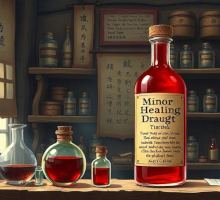
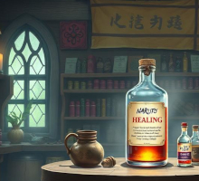

Minor Healing Draught

A reliable red tonic that knits minor wounds and bruises in moments. Perfect for apprentices and low-level delves where every hit point counts.
Price: $10.0 USD / $1,550.0 JA
Founded in the bustling trade district of Everhollow, Sweet Potions Inc has spent the last century brewing, refining, and perfecting tonics for heroes of every stripe. From wide-eyed beginners setting out on their first goblin hunt to legendary dragonslayers returning from the edge of the world, our doors have always been open and our cauldrons forever bubbling. Every bottle on our shelves is brewed by certified alchemists who follow the old guild standards, ensuring consistency, safety, and a touch of arcane flair.
Our catalog focuses on the practical essentials that every adventurer needs in the field: robust healing draughts, restorative elixirs to clear the mind and strengthen the spirit, concoctions to sharpen reflexes and shield the body, and a sprinkling of more whimsical brews for those special occasions. Whether you are stocking up before a dangerous delve or seeking a reliable supplier for your adventuring party, Sweet Potions Inc offers dependable, clearly-labeled potions at fair prices in both US and JA dollars.

A reliable red tonic that knits minor wounds and bruises in moments. Perfect for apprentices and low-level delves where every hit point counts.
Price: $10.0 USD / $1,550.0 JA

A concentrated healing blend favored by veteran parties. Rapidly restores significant vitality after tough battles or unexpected ambushes.
Price: $45.0 USD / $6,975.0 JA
A shimmering blue solution that sharpens concentration and steadies spellcasting hands. Ideal for wizards and sorcerers facing long days in the arcane arts.
Price: $30.0 USD / $4,650.0 JA
Grants the drinker a temporary, stone-like resilience. Blows feel dull, and cuts barely scratch the surface of the skin for the potion’s duration.
Price: $55.0 USD / $8,525.0 JA
A bright, citrus-scented brew that lightens the feet and quickens reflexes. Favored by scouts, rogues, and anyone who prefers not to be hit.
Price: $25.0 USD / $3,875.0 JA
A dark, velvety draft that grants superior low-light vision. Perfect for dungeon crawls, nighttime patrols, and stealth missions.
Price: $18.0 USD / $2,790.0 JA
A herbal potion that toughens the drinker’s skin like living bark, offering natural protection without heavy armor.
Price: $35.0 USD / $5,425.0 JA
A soothing lavender-toned potion that wards off fear, panic, and minor charms. Popular among negotiators, diplomats, and bards on tour.
Price: $22.0 USD / $3,410.0 JA
A rare, ember-hued draught that pulls a fallen ally back from the brink of defeat. Not quite resurrection, but often close enough.
Price: $120.0 USD / $18,600.0 JA
A balanced blend that offers mild healing, resistance to fatigue, and a gentle boost to morale for long journeys across dangerous lands.
Price: $28.0 USD / $4,340.0 JA
Sweet Potions Inc is nestled in the heart of Everhollow’s Arcane Market, just three doors down from the Clockwork Golem Forge and opposite the Singing Griffin Inn.
Address:
Sweet Potions Inc
13 Moonstone Alley, Arcane Market
Everhollow, Western Reach
Message Scrolls & Inquiries:
Email: hello@sweetpotions.example
Sending Stone: +1 (555) 123-4567
Shop Hours (Market Time):
Moonday to Fireday: 9:00 AM – 7:00 PM
Starday: 10:00 AM – 5:00 PM
Sunsday: Closed for rest and alchemical recalibration.